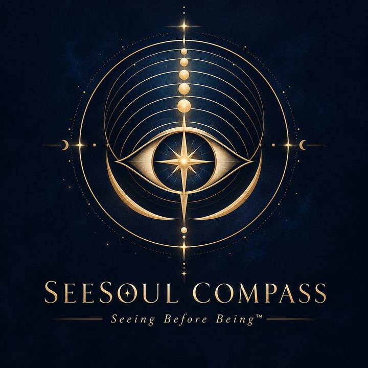

SEESOUL COMPASS™ · 七层看见
从一件放在心上的事，开始看见自己。
也许你正在烦恼一段关系、一个决定，或者说不清的一种状态。我们用七个很轻的问题，陪你把发生的事、感受和想法慢慢分开。
约 3–5 分钟 · 免费 · 不是心理测试或诊断 · 可以随时跳过或退出
开始整理自己 →先看看会做些什么
- 从生活开始：选一件最近放在心上的事。
- 走近自己的反应：看看感受、身体、想法和你通常的回应。
- 看见在意之物：留意这件事里你最想守住的是什么。
- 带走一点清晰：把你说过的话整理成一份觉察笔记。
每一题都可以选现成的选项、写自己的话，或者直接跳过。没有标准答案。完成之后不会自动预约心理咨询。
你的回答只留在这一页里，不会发送给本网站或任何 AI，也不会被保存；关闭或刷新页面后就会消失。阅读 Compass 隐私与使用说明
Compass 不提供紧急支持。如果你的生命正处于危险中，在澳大利亚请拨 000；Lifeline 13 11 14 提供 24 小时支持。